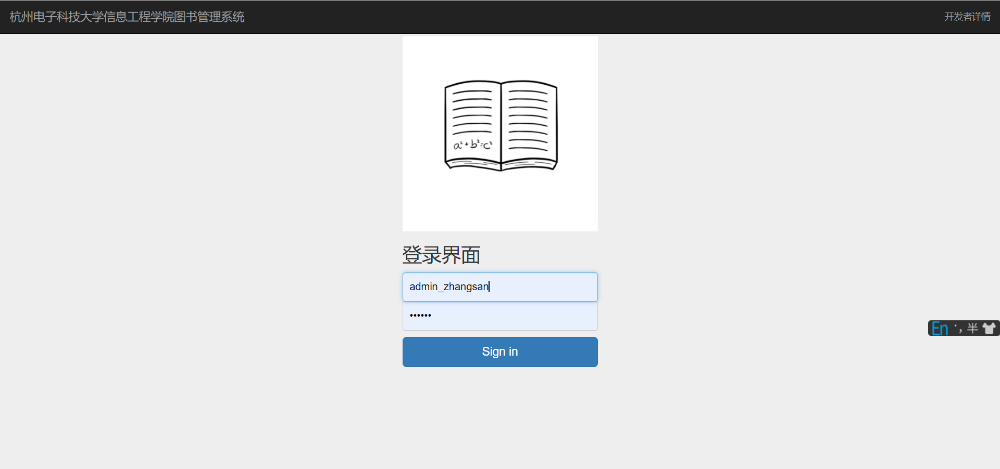
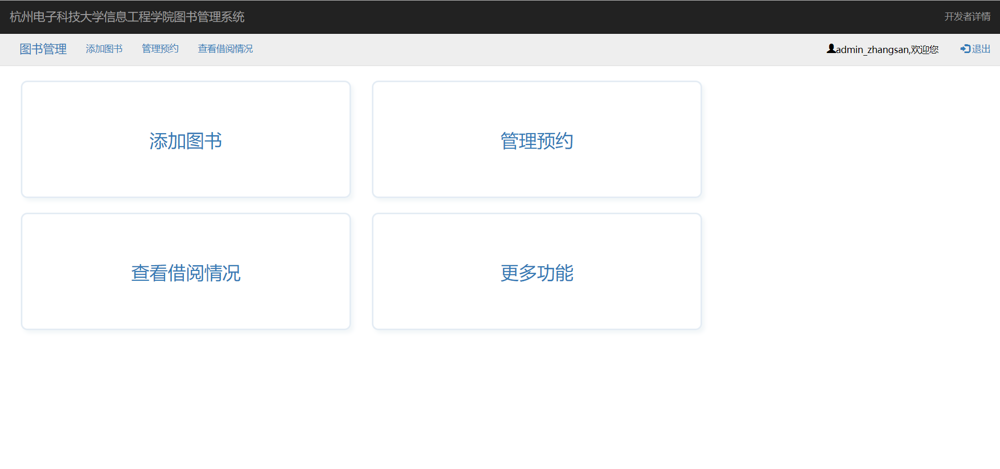
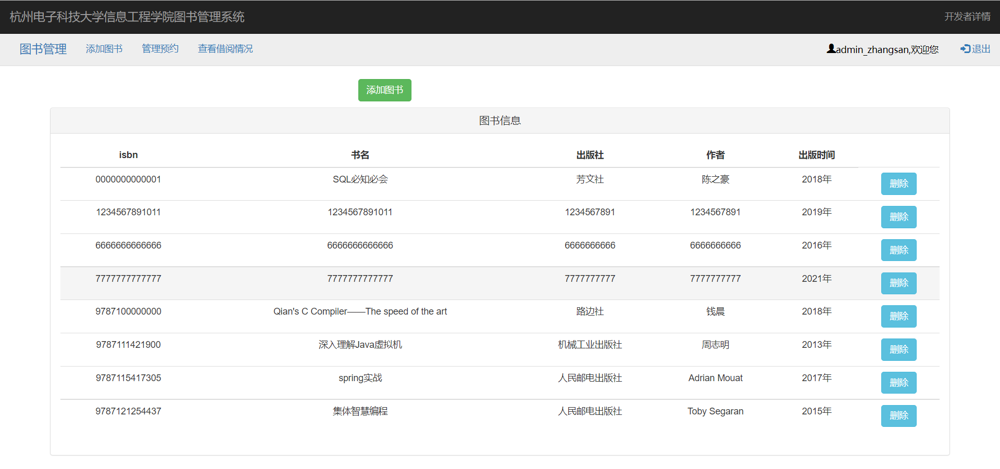
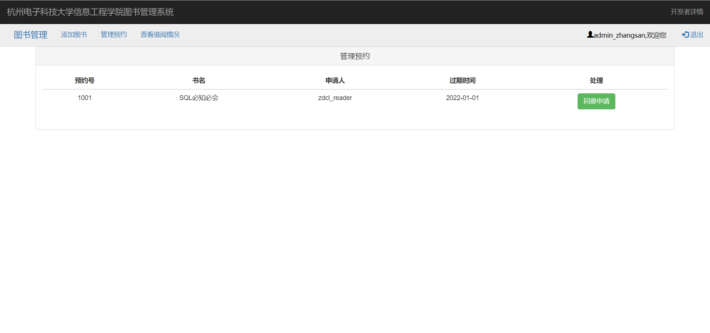
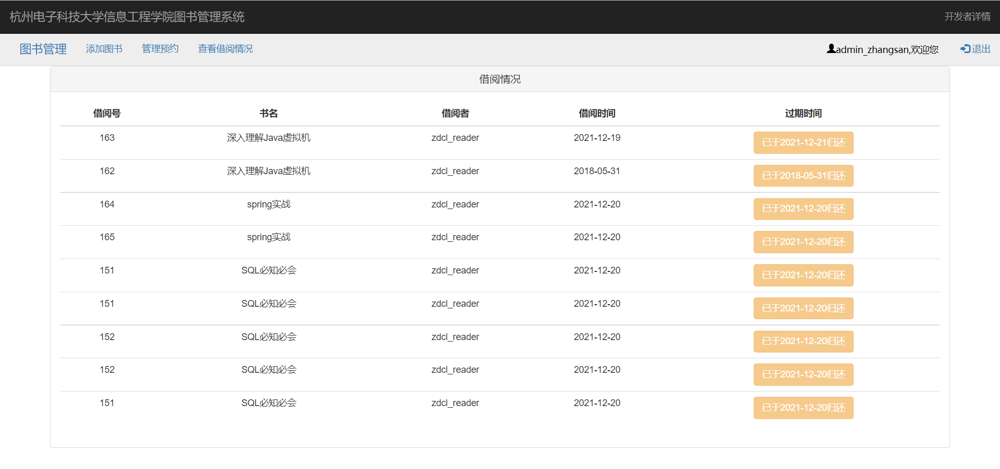
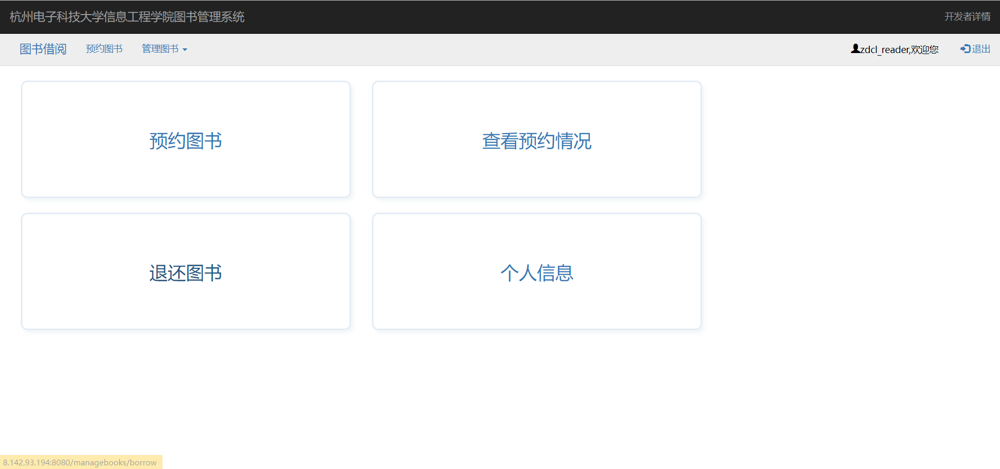
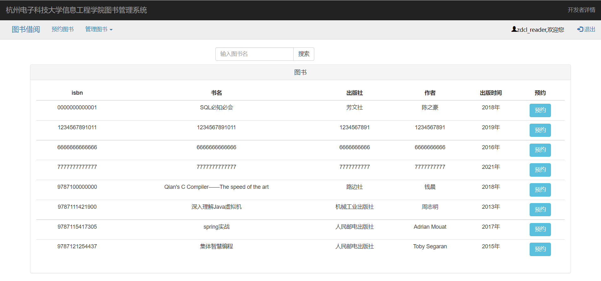
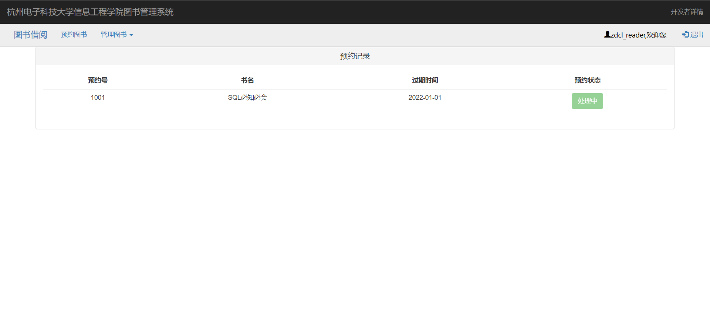
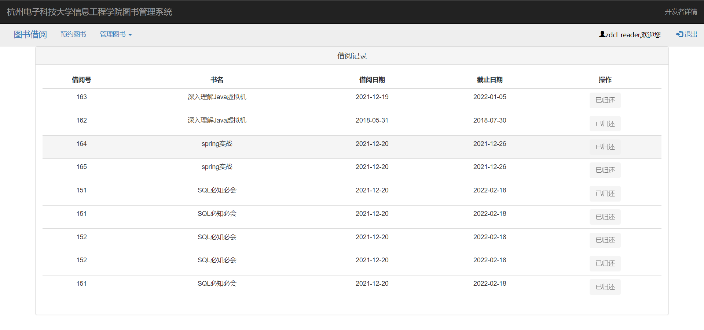
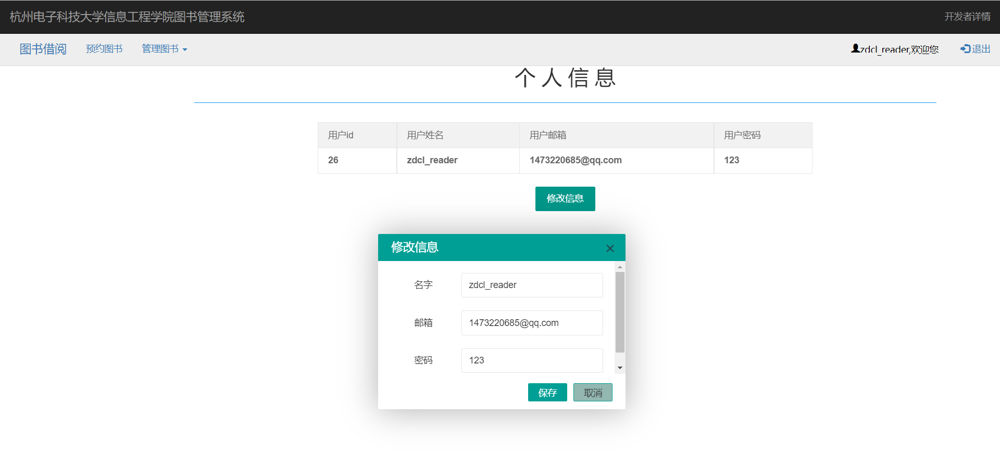

图书管理系统介绍
图书管理系统介绍
简介
项目地址：https://github.com/lcdzzz/springboot-library
对于github项目：https://github.com/jacklightChen/ManageBooks 的改造，这是原项目地址。
一个基于SpringBoot+Thymeleaf渲染的图书管理系统
功能:
- 用户: a.预约图书 b.查看预约记录 c.还书 d.查看个人信息以及修改个人信息
- 管理员: a.添加图书 b.处理预约(借书) c.查看借阅记录
另:
1.当用户过了还书日期仍旧未还书时会发邮件通知（原）
2.当有书被还时发邮件通知预约书的用户到图书馆进行借书（原）
在学习这个项目的过程中发现原项目的提供的sql文件并不完整，于是花了一些时间去完善了表结构，存储过程以及视图。
适用人群
适合刚接触springboot不久的同学使用，因为几乎对每行代码都写上了注释，阅读起来会更舒适
使用技术
| 后端 | … |
|---|---|
| 核心框架 | spring、springboot、mybatis |
| 连接池 | Alibaba Druid |
| 前端 | … |
|---|---|
| 核心框架(轻量简洁) | BootStrap、Thymeleaf |
界面入口: localhost:8080
管理员用户名: admin_zhangsan 密码: 123456 (manager表)
普通用户名: zdcl_reader 密码: 123 (reader表)
项目演示
登录界面

管理员页面

添加图书

管理预约

查看借阅情况

借阅者界面

预约图书

查看预约情况

退还图书

查看个人信息、修改个人信息

本博客所有文章除特别声明外，均采用 CC BY-NC-SA 4.0 许可协议。转载请注明来自 lcdzzz的博客！